并行计算-片上多处理器
并行计算-片上多处理器
关键概念
Scoreboard
在计算机体系结构和并行计算中，Scoreboard 是一种硬件机制，主要用于管理指令的执行顺序和资源分配，以支持无序执行（Out-of-Order Execution）或解决数据相关性问题。它的中文一般翻译为 “记分牌” 或 “计分板”。
Scoreboard 的作用
Scoreboard 的核心目的是协调指令执行，确保指令在处理器流水线中正确执行，即使它们之间存在依赖关系。它通过监控指令的状态、处理单元的可用性以及数据依赖性，来决定是否可以发射（issue）、执行和写回（commit）特定的指令。
具体来说，Scoreboard 的功能包括：
- 处理数据相关性：
- 读后写依赖（RAW，Read After Write）：确保后续指令读取正确的数据。
- 写后读依赖（WAR，Write After Read）：确保前面的读操作完成后再写入。
- 写后写依赖（WAW，Write After Write）：确保写入操作按照正确的顺序完成。
- 管理硬件单元的使用：
- Scoreboard 记录每个功能单元（如加法器、乘法器等）的状态，确保指令不会因资源冲突而错误执行。
- 支持指令的无序执行：
- 通过动态调度指令，允许后续指令在前面的指令尚未完成时提前执行（只要没有依赖冲突）。
Scoreboard 的工作过程
Scoreboard 的工作通常分为以下几个阶段，和指令流水线密切相关：
- Issue（发射）：
- 检查指令是否可以发射到功能单元。
- 如果目标寄存器或功能单元被占用，指令会暂停等待（Stall）。
- Read Operands（操作数读取）：
- 检查指令所需的源操作数是否可用。如果存在数据依赖，指令会等待。
- Execute（执行）：
- 指令在功能单元中执行。
- Write Result（写回结果）：
- 检查是否可以将结果写回寄存器。
- 如果寄存器仍在被使用（如存在 WAW 依赖），则写回阶段会被延迟。
Scoreboard 的组成
一个典型的 Scoreboard 包括以下信息：
- 指令状态：记录指令的当前状态（如发射、执行、写回）。
- 功能单元状态：记录每个功能单元的使用情况和操作。
- 寄存器状态：记录每个寄存器的状态，是否正在被某条指令使用。
Scoreboard 的优缺点
优点：
- 支持动态调度：
- Scoreboard 可以动态地调度指令，不需要严格按照程序的顺序执行，从而提高流水线的利用率。
- 简化控制逻辑：
- Scoreboard 集中管理指令的依赖和资源冲突，使指令调度更加简单、灵活。
- 解决数据依赖问题：
- 自动处理 RAW、WAR、WAW 等依赖问题，确保程序结果正确。
缺点：
- 硬件复杂性高：
- Scoreboard 需要维护多个状态表（寄存器、功能单元等），硬件开销较大。
- 性能瓶颈：
- 在资源紧张或指令过多的情况下，可能导致频繁的指令暂停（Stall），对性能产生影响。
- 无法完全解决控制相关性：
- 尽管 Scoreboard 可以解决数据依赖问题，但对控制相关性（如分支预测失败）仍然需要其他机制配合。
并行计算中的 “The Last Copy Problem”（最后一份拷贝问题）详解
在并行计算中，尤其是在涉及推测执行（speculative execution）或多线程并行的场景中，“The Last Copy Problem”（最后一份拷贝问题）是一个与寄存器数据有效性和传递相关的重要挑战。以下是对问题的详细中文解释：
问题背景与描述
- 线程之间的数据传递：
- 在并行执行中，寄存器的值可能需要在不同线程之间传递。
- 当一个线程完成某个寄存器的计算后，可能需要将这个值传递给后续的消费者线程。
- 线程终止后的数据管理：
- 当某个线程完成执行并退出时，如果没有后续线程需要直接继承它的数据，那么这个值可能不会被主动保存。
- 后续线程若需要该值，则需要显式地从终止线程中请求。
- 寄存器失效机制：
- 当一个新线程启动时，它可能会使前驱线程的寄存器副本失效（例如，为了确保数据一致性或防止冲突）。
- 这种机制可能导致芯片上某个寄存器的所有副本都被标记为无效。
- 最后一份拷贝问题：
- 如果一个寄存器的值在所有线程中只剩最后一个有效副本，而该副本即将失效，那么会出现问题：
- 未来需要使用这个寄存器值的线程无法直接从有效副本中获取值。
- 线程之间需要额外的通信（例如显式请求值），增加了开销。
- 如果一个寄存器的值在所有线程中只剩最后一个有效副本，而该副本即将失效，那么会出现问题：
关键挑战
- 数据传递延迟：
当值的最后一份拷贝失效后，消费者线程需要通过额外的机制（如显式请求）来获取该值，导致计算延迟。 - 寄存器管理复杂度：
在多线程环境中，如何高效管理寄存器的副本（避免不必要的失效）是一大难点。 - 推测执行的风险：
推测线程可能会生成一些数据，但这些数据在后续线程中并未被及时使用或保存，导致数据丢失。
解决思路
- 延迟失效机制：
- 在寄存器失效前，确保将寄存器值转移到其他线程或存储器中，避免最后一份拷贝的丢失。
- 广播机制：
- 允许线程在退出前将寄存器值广播给所有可能需要该值的线程，减少显式请求的开销。
- 寄存器快照：
- 在某些关键时刻对寄存器的状态进行快照保存，确保即使最后一份拷贝失效，也可以从快照中恢复。
- 智能线程管理：
- 通过线程调度器预测哪些线程会消费当前线程的寄存器值，提前进行数据传递或存储。
概要
大纲
传统单核处理器的局限性
- 超标量指令发射技术难以挖掘足够的并行性，单核性能提升遇到瓶颈。
- 功耗和散热问题严重，简单提升时钟频率已不可行。
- 芯片设计规模和成本不断上升，难以持续进行更大规模处理器的设计。
CMP 的核心优势
- 在单芯片中集成多个简单内核，替代大型复杂内核设计。
- 内核可采用简单流水线或中等复杂超标量结构。
- 随半导体工艺进步，可在新一代芯片中增加更多内核，提升处理器性能。
CMP 的性能表现
支持多线程并行执行，在许多应用中显著提升性能。
内核间通信延迟低于传统多处理器系统（SMP），适合更多应用负载的并行执行。
CMP 可直接利用应用中的线程级并行性（TLP），挖掘大粒度任务和进程级并行性。
利用低通信延迟和新特性（如投机线程机制），开发细粒度并行性（循环、任务、基本块等）。
传统超标量指令发射技术无法从典型程序指令流中发掘出足够多的并行性，使得单核微处理器的性能再无法有效扩展。另外，处理器的功耗与散热问题日趋严重，除非使用水冷散热系统，否则很难继续依靠简单提高时钟频率的方法来改善微处理器性能。综合这些问题可以得到一个简单结论:目前单个微处理器芯片集成了数量空前的晶体管，如果继续保持每年或两年就完成新一代更大规模处理器的设计与调试工作，将会使成本直线上升以至无法完成设计工作。
CMP通过在单个芯片中放入多个结构相对简单的处理器内核而不是使用一个巨大的处理器内核避免了上述问题。CMP内核既可采用简单流水线结构，又可以使用中度复杂的超标量处理器，无论选定哪种内核，CMP系统都可以随着半导体工艺的进步在每一代新版处理器芯片中加入更多数量的高速处理器内核，来有效扩展处理器性能。此外，并行程序将多线程任务分发给CMP系统中几个内核并行执行，与单内核处理器相比可以取得显著的性能提升。尽管在许多实用的应用负载中并行线程已经非常常见但仍有一些很重要的应用负载很难被划分为几个线程来并行执行。与传统多处理器系统相比，CMP系统中内核之间的通信延迟更低，从而使更多应用负载适于并行执行。但是某些关键应用中缺乏足够的并行度，可能成为这些系统中推广CMP应用的主要障碍。
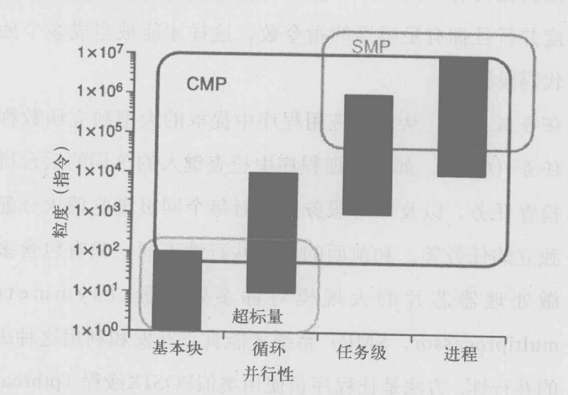
CMP的诞生改变了应用程序并行性的图景。与传统单处理器不同，多核处理器芯片可以直接利用应用中的TLP，因此也可像SMP一样挖掘和利用传统大粒度任务和进程级并行性。另外，由于内核间通信延迟远低于SMP，并能集成猜测线程机制之类的新特性，CMP处理器能够充分开发循环、任务甚至基本块等细粒度并行性。
The Case for a Single-Chip Multiprocessor
该研究表明，可以在与宽发射超标量体系结构处理器相同的面积内实现单芯片多处理器。我们发现，对于并行性较低的应用，两种微体系结构的性能不相上下。对于细粒度和粗粒度并行性较高的应用，多处理器微体系结构的性能明显优于超标量体系结构。单芯片多处理器体系结构的优势在于，它们可为难以并行化的应用提供高时钟速率处理器，并为并行应用提供低延迟的处理器间通信。
该研究表明，由于基本电路限制和有限的指令级并行性**，超标量体系结构执行模型将随着问题宽度的增加而得到递减的性能回报**（边际效应非常明显）。面对这种情况，构建复杂的宽发射超标量体系结构CPU并不是最有效地利用硅资源的方法。我们提出了这样一个方法：更好地利用硅片面积的方法是使用更简单的处理器构建多处理器微体系结构。
超标量结构的局限性
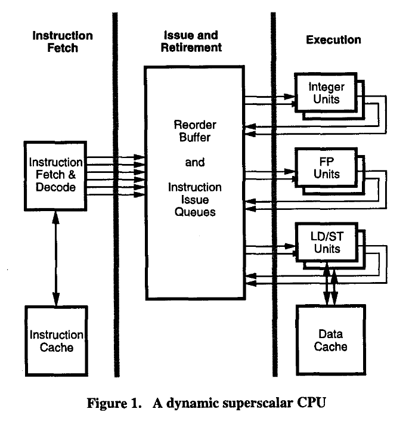
动态超标量处理器的最新实现采用了类似图 1 所示的结构。在这种结构中，架构寄存器和物理寄存器之间的寄存器重命名是明确进行的，指令调度和指令之间的寄存器依赖性跟踪是在指令发射队列中进行的。在这些处理器中，指令队列实际上是作为不同指令类别（如整数、浮点、加载/存储）的多个指令队列来实现的。动态超标量机器执行指令的三个主要阶段也如图 1 所示。它们分别是取指令、发指令和执行指令。
取指阶段
取指阶段的目标是为 CPU 的其他部分提供一个大而准确的解码指令窗口。
有三个因素制约着指令取指：
- 错误预测分支
- 通过使用适量的内存（64Kbit）Buffer可以很大程度上缓解
- 指令对齐错误
- 当问题宽度大于四条指令时，很有可能需要对单个指令包的分支进行取值，因为在整数程序中，每五个指令中就有一个是分支。这就需要同时从两个高速缓存行取回指令，并将高速缓存行合并成一个指令包。
- 将指令高速缓存划分为多个部分，并同时从多个划分中取数的技术，其实现成本并不高
- 高速缓存缺失。
- 高速缓存的显著未命中率也会限制取指器保持足够指令窗口的能力
- 在动态调度处理器中，可以通过执行已经在指令窗口中的指令来隐藏部分指令缓存未命中的延迟
考虑到良好的分支预测和指令对齐，宽发射动态超标量处理器的取指阶段很可能不会限制性能。
发射阶段
在发射阶段，将重命名的指令包插入到指令发射队列中。一旦所有操作数准备就绪，就会发出一条指令来执行。
有两种方法可以实现重命名
使用显式表将架构寄存器映射到物理寄存器
- 优点是寄存器重命名不需要比较
- 缺点是映射表结构所需的访问端口数量为 ，其中 是每条指令的操作数数量， 是机器的发出宽度
使用组合重排序缓冲/指令队列
- 需要 个比较器来确定哪些物理寄存器应为新指令包提供操作数，其中 n 是对寄存器标识符进行编码所需的位数，Q 是寄存器标识符的大小。指令发出队列
- 一旦指令进入指令队列，所有发出的指令都必须更新它们的依赖关系，导致需要另一组 个比较器
- 随着发射宽度的增加，需要更大的指令窗口来找到可以并行发射并维持完整发射带宽的独立指令。结果是指令发出队列的大小呈二次方增加。
最终，指令发射队列将限制处理器的周期时间。由于这些原因，指令发射队列将从根本上限制宽发射超标量机器的性能。
执行阶段
在执行阶段，操作数来自寄存器堆或者前序指令的旁路。宽超标量执行模型将在寄存器堆栈、旁路逻辑和功能组件中遇到限制。
- 寄存器堆栈
- 更宽的指令发射需要更大的指令窗口，这意味着更多的寄存器重命名。不仅寄存器文件必须更大才能容纳更多重命名的寄存器，而且满足全部指令发射带宽所需的端口数量也会随着发射宽度的增加而增加。
- 随着问题宽度的增加，寄存器堆栈的复杂性也会急剧增加
- 旁路逻辑
- 旁路逻辑的复杂度也会随着执行单元数量的增加而呈二次方增长
- 更重要的限制因素是连接执行单元的导线的延迟
- 功能组件
- 可以复制算术功能单元以支持问题宽度，但必须在主数据高速缓存中增加更多端口，以提供必要的加载/存储带宽。
- 若使用高速缓存解决，增加的多路复用和高速缓存的带宽将导致更多的负载。
片上多处理器
构建单芯片多处理器的动力来自两个方面：技术推动和应用拉动。
- 技术问题，尤其是复杂问题队列和多端口寄存器文件的延迟（the complex issue queue and multi-port register files），将限制宽超标量执行模式的性能回报。这就促使我们需要一种分散的微架构来保持微处理器的性能增长。此外，对于非集中式微体系结构，构建多个简单的快处理器比构建一个复杂的处理器容易得多。
- 从应用角度看，最有效的微体系结构取决于应用中并行性的数量和特征
以浮点运算为主的程序具有较高的并行性，并能从各种旨在利用并行性的方法（如超标量、VLIW 或矢量处理）中获得性能优势。单芯片多处理器设计简单，单个处理器的时钟频率非常高，可以很好地处理第一类（整数运算为主的）程序。同一芯片上的处理器之间低延迟通信，还能使多处理器更好的利用第二类浮点程序的并行性（来提升运行的性能）。
使用多处理器的方法有很多，文章给出了如下三种：
并行执行多个进程
并行执行来自单个应用程序的多个线程
- 在这种情况下，线程使用共享内存进行通信，而这些应用程序被设计为在旁路机器上运行，其通信延迟可达数百个 CPU 时钟周期；因此，线程不会以非常精细的方式进行通信。
- 手工并行化应用程序的另一个例子是细粒度线程级整数应用程序。当指令窗口大小非常大、分支预测非常完美时，这些应用会表现出适量的并行性，因为存在的并行性是广泛分布的。由于窗口尺寸大、分支预测完美，因此很难通过超标量执行模型提取这种并行性。
- 但是，如果程序员了解应用程序中并行性的本质，就有可能将应用程序并行到多个线程中。这种方式暴露出的并行性是细粒度的，传统的多处理器架构无法利用。利用这种并行性的唯一方法是采用单芯片多处理器架构。
自动并行化
- 与手动并行化的整数应用一样，可以从单芯片多处理器提供的低延迟处理器间通信中获得显著的性能优势
两种微架构
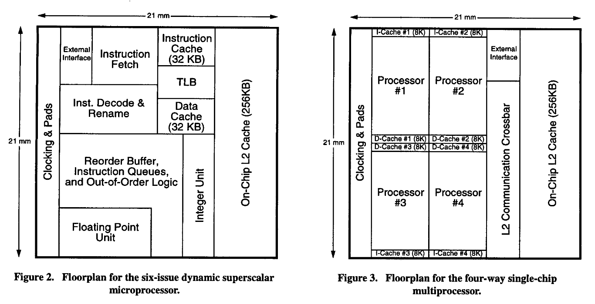
性能比较
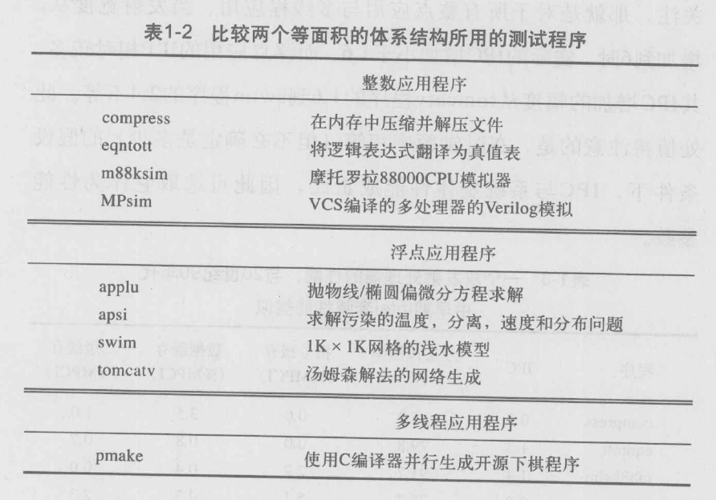
我们首先考察了超标量微体系结构和多处理器微体系结构中一个处理器的性能。表 5 显示了 MP 的一个处理器的 IPC、分支预测率和高速缓存未命中率；表 6 显示了 SS 微体系结构的 IPC、分支预测率和高速缓存未命中率。表中的高速缓存未命中率以每完成一条指令的未命中率（MPCI）表示，包括在内核和用户模式下完成的指令。
当问题宽度从 2 个增加到 6 个时，我们发现所有整数和多编程应用的实际 IPC 增加幅度均小于 1.6 倍。对于浮点运算程序，性能提升幅度从 tomcatv 的 1.6 倍到 swim 的 2.4 倍不等。
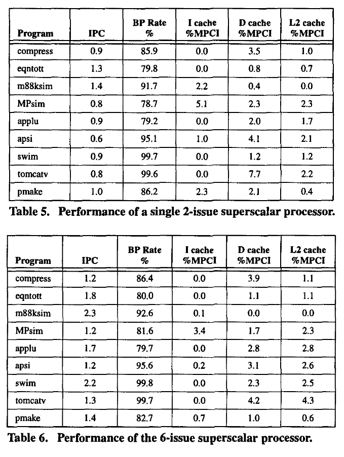
超标量处理器停顿的主要原因之一是高速缓存缺失（miss）。然而，在具有投机执行和非阻塞缓存的动态调度超标量处理器中，缓存未命中的特征并不简单。在单发无序处理器中发生的缓存未命中与在投机无序处理器中发生的缓存未命中并不一定相同。在投机处理器中，有一些未命中是由从未结束的投机指令引起的。在非阻塞缓存中，当前引发缓存缺失的缓存行还可能继续引发缓存缺失。这两种类型的未命中率都会导致投机乱序处理器的缓存未命中率上升。而第二种类型的缓存缺失事件是导致拥有相同缓存大小的6发射处理器的二级缓存缺失率高于双发射处理器的主要原因。
这里其实与9800X3D是一样的道理，通过使用大内存来提高缓存命中率，从而提升处理器性能
图 4 显示了理想 IPC 为 2 的 MP 微体系结构处理器的 IPC 细分。除了实际达到的 IPC 之外，我们还显示了由于数据和指令缓存停滞以及流水线停滞造成的 IPC 损失。我们发现，IPC 损失的很大一部分是由于一级缓存较小引发的数据缓存停顿造成的。
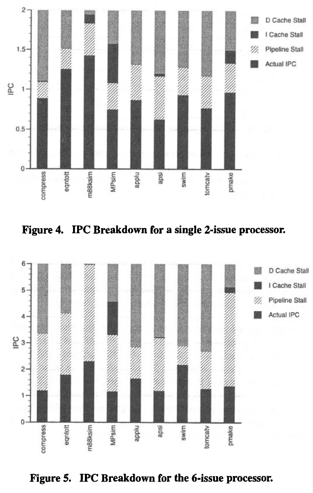
图 5 显示了 SS 微架构的 IPC 细分。我们看到，由于流水线停滞，损失了大量的 IPC。与双发射处理器相比，流水线停滞的增加是由于应用中有限的 ILP 和 2 个周期的 L1 数据高速缓存命中时间造成的。
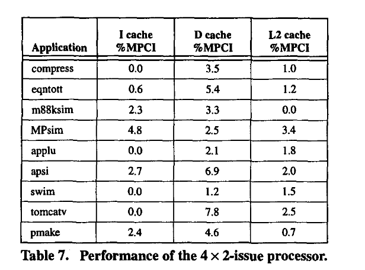
表 7 显示了 CMP 微体系结构以 MPCI 表示的高速缓存未命中率。为减少空闲循环和同步导致的旋转造成的未命中率影响，完成的指令数为单个 2 发处理器的指令数。比较表 5 和表 7 可以看出，对于 eqntott、m88ksim 和 apsi，CMP 微体系结构的数据高速缓存未命中率明显高于单个 2 发处理器。主要原因还是处理器间通信问题。
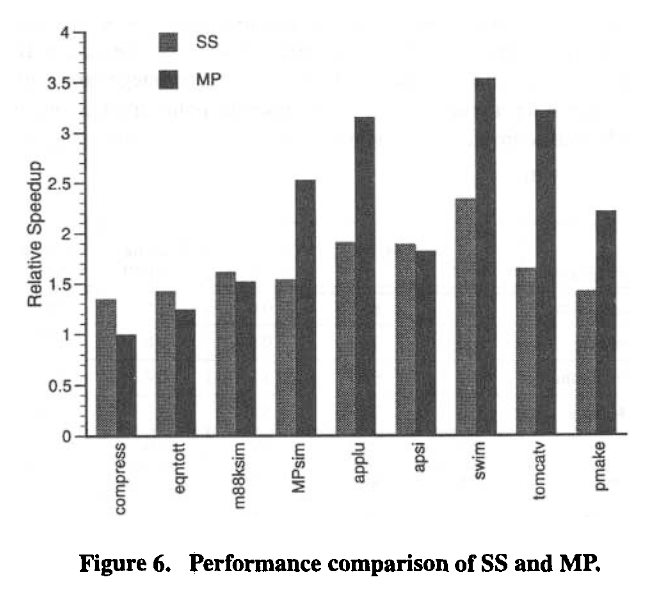
图 6 显示了 SS 和 MP 微体系结构的性能比较。性能以每种微体系结构相对于单个 2 核处理器的速度提升来衡量。在压缩这一并行性较低的应用中，即使四个处理器中有三个处于空闲状态，MP 也能达到 SS 性能的 75%。
对于 eqntott、m88ksim 和 apsi 等具有细粒度并行性和高通信性的应用，MP 和 SS 具有相似性。这两种架构都能利用细粒度并行性，但方式不同。SS 微体系结构依赖于从单线程控制中动态提取 ILP。MP 可以利用中等水平的 ILP，而且与传统的多处理器不同，它可以利用细粒度线程级并行性。与双发处理器相比，SS 和 MP 方法的性能提高了 30% 到 100%。
具有大量并行性的应用允许 MP 微体系结构在细粒度并行性和 ILP 的基础上利用粗粒度并行性。在这些应用中，MP 微体系结构的性能明显优于 SS 微体系结构，后者动态提取并行性的能力受到 128 指令窗口的限制。
结论
我们的研究结果表明，在无法并行化的应用中，超标量微体系结构的性能比多处理器体系结构的一个进程高 30%。在具有细粒度线程级并行性的应用中，多处理器微体系结构可以利用这种并行性，因此即使在时钟频率相同的情况下，超标量微体系结构的性能也最多提高 10%。我们预计，在多处理器中使用更简单的 CPU 时，更高的时钟频率将消除这种微小的性能差异。在具有大颗粒线程级并行性和多编程工作负载的应用中，多处理器微体系结构的性能比宽发射超标量微体系结构高 50-100%。
Multiscalar Processors
多标量处理器使用一种新的实现范例，从普通的高级语言程序中提取大量指令级并行 (ILP)。通过基于硬件在运行时做出的预测，投机性地执行指令，从而可以处理控制和数据依赖关系。
与其他已知的 ILP 处理范例（例如超标量和 VLIW）不同，多标量处理器的“前端”投机性地将大量常规程序代码（或“任务”）分配给多个并行处理单元，而无需停下来查看任务中包含的单个指令（包括任意数量的条件分支和过程调用）。然后，每个并行处理元素使用其自己的程序计数器和单个逻辑寄存器文件的物理副本来执行其任务。数据依赖关系由硬件和软件的组合解决，与当前使用的 ILP 范例相比，硬件承担了更多的责任。
大纲：
多标量处理器：处理单元的集合
CFG及其任务划分
- 正确解决任务间的数据依赖关系
- 建立大且准确的动态指令窗口
- 任务划分、边界与停止条件（软件实现）：
- 编译器在划分任务时确定任务的边界和控制流出点，并标记相关的“停止”指令。
- 处理单元在执行任务时，遇到满足停止条件的指令即认为任务完成。
执行语义的保持
- 任务的顺序执行：每个处理单元内部按顺序执行分配给它的任务。
- 全局顺序约束：通过将处理单元组织成循环队列，强制任务以松散顺序执行。队列中的头部和尾部分别表示最早和最晚执行的任务。
任务间通信
- 寄存器：
- 寄存器值通过创建掩码（Create Mask）和累加掩码（Accum Mask）管理。
- 通过循环单向环转发给后续任务，确保任务间的数据依赖得到满足
- 内存：
- 保守方案：等待；
- 激进方案：投机
投机及其线程压缩与恢复
处理器关键结构
- 处理单元：通过单向环连接，支持任务间的数据转发。
- 数据存储：通过互连结构与多个数据存储单元（Data Bank）通信。
- 定序器：负责任务的分配和队列管理。
多标量程序：基于控制流，提供支持快速遍历（通过 CFG）的方法，使得可以将任务集中分配给处理单元
关键机制：任务划分，静态分析、掩码生成（寄存器值的管理）与指令标志位（寄存器值的转发）
- 静态分析与创建掩码：
- 编译器通过静态分析CFG生成创建掩码，描述任务可能产生的寄存器值集合。
- 由于任务可能包含多个动态分支，创建掩码必须保守地涵盖所有可能产生的值。
- 转发标志位与转发机制：
- 任一任务中，只有寄存器的最后一次更新值需要转发给后续任务。
- 编译器标记最后一次更新寄存器的指令为特殊的“操作-转发”指令，用于自动转发更新值。
- 对未产生值的寄存器，处理单元会释放这些寄存器以加速后续任务执行。
- 终止标记位机制：
- 每条指令可以增加停止位，分别用来指示任务是否完成。
指令集架构无需大范围修改
多标量硬件：通过浏览控制流图（CFG），将任务分配给多个处理单元（Processing Units, PUs）并以顺序方式执行这些任务。
- 任务分配与执行
- 排序器（Sequencer）：
- 排序器负责确定任务的执行顺序。
- 在获取任务描述符地址后，排序器会通过以下步骤调用任务：
- 提供任务的第一条指令地址。
- 指定任务的创建掩码。
- 为任务构建累加掩码。
- 排序器还会通过静态或动态预测方案，预测后续任务并分配到相应的处理单元。
- 任务执行：
- 每个处理单元独立获取并执行任务，直到遇到任务终止指令（停止位被设置）。
- 单向环连接：处理单元通过单向环连接，以便在任务间传递信息（如定量、数值等）。
- 数据缓存与内存管理
- 数据缓存和互连：
- 数据高速缓存（Data Cache）与处理单元互连是直通的，但更新数据缓存的操作不是投机性的。
- 为管理投机性内存操作，引入了地址解析缓存器（ARB）。
- 地址解析缓存器（ARB）：
- 功能：ARB 用于保存投机性内存操作、检测内存依赖性违规，并在必要时采取纠正措施。
- 运作机制：
- 投机性操作的值存储在 ARB 中，只有在操作变为非投机性状态时，才会更新到数据缓存。
- ARB 通过加载和存储操作位跟踪每个处理单元的任务执行，从而检测内存依赖性违规（如后续加载发生在前继存储之前）。
- 资源限制与解决方案：
- ARB 是有限资源，可能会耗尽存储空间。
- 解决方案：
- 压缩任务以释放 ARB 空间，保证任务继续向前推进。
- 暂停其他处理单元，仅允许头部（head）指向的处理单元推进，从而逐步释放 ARB 存储空间。
多标量执行中的周期分布问题
- 无用计算周期：处理单元执行了最终被压缩的任务，原因包括使用错误的数据值或错误的预测
数据通信同步
- 问题：内存顺序冲突可能导致任务压缩。例如，当后续任务在前置任务完成存储操作之前加载了相同内存位置的数据时，就可能引发冲突。
- 优化策略：
- 在寄存器级别引入依赖关系，使内存通信与寄存器通信同步。
- 延迟加载操作，降低加载早于存储的概率。
- 使用显式信号同步冲突操作。
- 实践经验：大多数冲突发生在全局标量和结构（如文件指针、缓冲区指针、计数器）更新中，而非任意内存位置。这些访问易被编译器分析并同步。
投机的早期验证
- 问题：通常在任务结束时才决定是否压缩任务，导致后续任务可能执行大量无用计算。
- 优化策略：
- 引入验证指令：任务启动后尽早检测预测的正确性。
- 循环退出测试：在循环开始时验证是否达到最后一次迭代，避免无用的循环迭代。
无计算周期（停滞周期）：处理单元有任务分配，但因依赖关系或资源限制无法执行计算。
任务内依赖
问题：同一任务指令之间的依赖性可能导致无计算周期（例如等待高延迟指令的结果）。
优化策略：使用单核处理器的优化技术，例如：
- 非阻塞缓存。
- 非顺序执行。
- 代码调度。
任务间依赖
问题：不同任务之间的指令依赖可能导致停滞。例如，后续任务消费指令等待前置任务生产指令的结果时，会导致停滞。
优化策略：
- 编译器优化：编译器可以优化算术归纳变量，但对内存归纳变量的优化效果有限。
- 消除程序限制：在某些情况下，需要程序员修改源代码以消除不可避免的依赖。
实践经验：这种依赖性在顺序执行程序中普遍存在，因为程序员通常假设指令会以顺序方式执行。
负载均衡策略：多标量执行需要任务按顺序退出。如果任务粒度不合适，则可能导致负载不均衡，增加停滞周期。例如，短任务的处理单元完成任务后，需要等待前置任务退出头部，导致空转。
- 优化策略：
- 选择适当的任务粒度：
- 灵活定义任务内容，允许包含函数调用。
- 同一函数可以根据调用点选择不同的任务粒度（如将函数视为单个任务或分解为多个任务）。
- 在任务粒度选择中，编译器应尽量保证动态指令大小大致一致，避免因任务粒度过大或过小而导致不均衡。
OverView
基本概念
控制相关性（以条件分支的形式出现）是高度并行执行的一个主要障碍，因为这些相关性必须在已知所有后续指令有效之前解决。
以控制依赖关系为重点，我们可以将静态程序表示为一个控制流程图（CFG），其中基本程序块是节点，弧表示从一个基本程序块到另一个基本程序块的控制流程。动态程序的执行可视为在程序 CFG 中行走，生成程序特定运行时必须执行的基本模块动态序列。
为了实现高性能，指令级并行处理器必须尝试以较高的并行性在 CFG 中行走。利用投机执行进行分支预测是一种常用的技术，可以提高走行过程中的并行程度。不过，任何并行运行的主要限制条件是必须保持程序中假设的顺序语义。
在多标量执行模型中，CFG 被分割成若干部分，称为任务。多标量处理器投机地（speculatively,）遍历 CFG中的所有任务，而不会停下来检查任务中的任何指令。通过将任务的初始程序计数器传递给处理单元，将任务分配给处理单元集合之一来执行。然后多个任务在处理单元上并行执行，从而产生每个周期多个指令的总执行率。
在这个层面上，这个概念听起来很简单，但要使其发挥作用，关键在于正确解决任务间的数据依赖关系。特别是，指令之间通过寄存器和内存传递的数据必须由硬件正确路由（寄存器间与内存间等等的一致性）。此外，正是在这一任务间数据通信领域，多标量方法与传统的多处理方法有着显著的不同。
多标量处理器采用CFG非顺序行走的目的是建立一个大而准确的动态指令窗口，从中可以提取独立指令并调度以进行并行执行。 （用 ILP 的说法，指令窗口是正在考虑执行的指令的集合。）为了执行此功能，多标量处理器以大步长遍历 CFG，而不是逐条指令（如顺序指令中的情况）。处理器），也不是逐个基本块，而是逐个任务
任务是 CFG 的一部分，其执行与动态指令序列的连续区域相对应（例如，基本块的一部分、一个基本块、多个基本块、一个循环迭代、整个循环、函数调用等）。一个程序被静态地划分为多个任务，这些任务由 CFG 的注释来划分。每走一步，多标量处理器都会将一个任务分配给一个处理单元执行，而不考虑任务的实际内容，并继续从这一点走到 CFG 中的下一点。
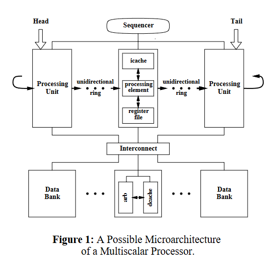
图 1 显示了多标量处理器可能的微体系结构。简单来说，可以将多标量处理器视为处理单元的集合，并带有一个将任务分配给处理单元的定序器（sequencer ）。一旦任务被分配给处理单元，该单元就会获取并执行任务的指令，直到任务完成。多个处理单元（每个处理单元都有自己的内部指令排序机制）支持在任何给定时间步长中执行多个任务，从而支持多条指令。动态指令窗口中包含的指令以最早执行的任务中的第一条指令和最新执行的任务中的最后一条指令为界。鉴于每个任务可能包含循环和函数调用，这意味着指令窗口的有效大小可能非常大。一个关键点是，并不是这个大范围内的所有指令都被同时考虑执行，只有每个处理单元内的有限指令集被考虑执行。
需要注意的是，任务虽然是独立的指令组，但并不是独立的。由于任务是顺序指令流的一部分，因此在执行过程中必须遵守各个指令之间的数据和控制关系。多标量实施的一个关键问题是并行处理单元之间的数据和控制信息通信。也就是说，我们如何提供顺序行走的表象，而实际上我们在 CFG 中执行的是非顺序行走（也许可以认为是根本的非顺序行走）？
为了保持这个看起来的顺序执行方式，我们采用了双重策略。首先，我们确保每个处理单元都遵守分配给它的任务的顺序执行语义。其次，我们在处理单元集合上强制执行一种松散的顺序，这反过来又对任务施加了一种顺序执行的约束。处理单元的顺序是通过将处理单元组织成一个循环队列来实现的。头指针和尾指针分别表示执行当前任务中最早和最晚的处理单元。例如，在图 2 的示例中，位于头部的处理单元正在执行第一次迭代，在其之前的单元正在执行第二次迭代，在其之后的单元正在执行第三次迭代。
在执行任务指令的过程中，既会产生数值，也会汇总数值。这些值会被绑定到存储位置，即寄存器和内存。由于顺序执行模型将存储视为一组寄存器和内存位置，因此多标量执行也必须保持这种观点。此外，多标量执行必须确保指令消耗和产生的值与顺序执行中的值相同。为了提供这种行为，我们必须同步任务间的通信。
就寄存器而言，控制逻辑通过对寄存器的保留，使前置任务中寄存器值的产生与后续任务中这些值的消耗同步。任务可能产生的寄存器值可以通过静态方式确定，并保存在创建掩码（create mask）中。创建掩码中的寄存器值产生后，会通过循环单向环（见图 1）转发给后继任务，即作为该单元逻辑继承者的处理单元。后继任务对寄存器的保留在累加掩码（accum mask）中给出，累加掩码是当前活动的前继任务创建掩码的总和。前置任务单元的值到达后，后继任务单元的保留会被清除。如果任务使用了其中一个值，只有在收到该值时，消费指令才能继续执行；否则，它将等待该值到达。
内存的情况则有所不同。与寄存器值不同，我们无法提前精确确定任务消耗或产生了哪些内存值。如果已知某个任务消耗的内存值（通过加载指令）是在前一个任务中产生的（通过存储指令），那么就有可能同步消耗和产生该内存值。也就是说，后继任务中的加载可以等到前继任务中的存储完成后再进行（与寄存器的情况类似，但由于名称空间大小不同，确切的同步机制也会不同）。
在不具备这种知识的更常见情况下，可以采取保守或激进的方法。保守的方法是等待，直到确定负载将读取正确的值。这种方法通常意味着在一个任务中延迟加载，直到所有前置任务完成所有数据存储，其结果可能是接近顺序执行。更激进的方法是投机性地执行加载，期望前置任务在稍后时间不会将某个值存储到相同位置。这必须进行动态检查，以确保没有前置任务将值写入后继任务先前读取的内存位置。如果检查发现加载和存储发生冲突（不按正确顺序发生），后继任务必须停止执行并启动适当的恢复操作。
由于多标量执行的投机性质，必须能够确认正确的执行以及从错误的执行中恢复。任务内指令的执行可能被认为是投机性的，原因（方式）有两个：控制投机，以及数据投机。当任务执行时，通过程序 CFG 确定正确的执行路径。如果控制投机（即对下一个任务的预测）不正确，则必须压缩后续任务并恢复正确的任务序列。同样，如果任务使用了不正确的数据值，则必须粉碎有问题的任务并恢复正确的数据值。在任何情况下，压缩任务的操作都会导致压缩该任务之后正在执行的所有任务（否则，维护顺序语义会变得复杂）。
为了便于维护顺序语义，多标量处理器按照分配任务的顺序从单元循环队列中退出任务。在投机执行期间，任务生成的值可能正确，也可能不正确。仅确定任务产生的值是正确的，并且在任务即将退出时可以被其他任务安全地消耗。尽管如此，在整个任务执行过程中，值都会被乐观地转发以供投机使用。因为任务在生成值时会将值转发给其他任务，因此，在它成为head时，其大部分（如果不是全部）值都已被转发。因此，使任务退出可以简单地是更新头指针以释放处理单元，以便可以分配新任务的问题。
多标量程序
多标量程序必须提供支持快速遍历（通过 CFG）的方法，使得可以将任务集中分配给处理单元。下面，我们描述了机器级多标量程序中维护的三种不同类型的信息，以促进这一目标：（i）构成工作的任务的实际代码，（ii）CFG结构的细节， (iii) 各个任务的沟通特征
任务被指定为一组指令，与顺序机的程序片段相同。尽管表示代码的指令集架构（ISA）影响每个单独处理单元的设计，但它对多标量处理器的其余设计影响不大。因此，用于指定任务的指令集是次要的。 （这一事实的意义在于现有的 ISA 无需进行重大修改即可使用。）
多标量处理器的定序器需要有关程序控制流结构的信息，以促进 CFG 的快速遍历。特别是，它需要知道哪些任务可能是 CFG 中任何给定任务的后续任务。多标量排序器使用此信息来预测可能的后续任务之一，并从该点继续 CFG 行走。 （与顺序执行中的相应情况不同，控制在当前任务完成之前继续执行后续任务。）此类信息可以静态确定并放置在任务描述符中。任务描述符可以散布在程序文本中（例如，在任务代码之前）或放置在程序文本旁边的单个位置（例如，在末尾）。
为了协调不同任务之间的执行，需要根据任务可能消耗的值集合和任务可能产生的值集合来表征每个任务。在顺序执行中，当指令被获取和检查时，该信息是在指令解码过程中发现的。然而，多标量执行的目标是将任务分配给处理单元并继续执行下一个任务，而不检查分配的任务的内容。
处理寄存器值的过程很简单。 编译器执行 CFG 的静态分析，以提供创建掩码，该掩码指示任务可能产生的寄存器值。创建掩码一般存放在在任务描述符内。由于一个任务可能包含多个由（动态解析的）控制条件控制的基本块的执行，因此不可能静态地确定将动态创建哪些寄存器值。因此，创建掩码必须是保守的，从而包括可能产生的所有寄存器值。
处理单元在执行任务中的指令时，会产生寄存器值，这些值必须转发给后续任务。由于处理单元无法事先确定哪些指令包含其分配的任务（甚至可能尚未获取指令），因此无法知道哪条指令执行了必须转发给其他任务的寄存器更新。根据顺序语义，只有任务中寄存器的最后一次更新才应转发给其他任务。可以选择等待任务中的所有指令都执行完毕（即不可能再更新寄存器）。然而，这种策略并不可取，因为它往往意味着其他任务必须等待一个已经可用的值，而且可能要等待相当长的一段时间。
另一方面，编译器知道任务中更新特定寄存器的最后一条指令。编译器可以将这条指令标记为特殊（操作-转发）指令，除了执行指定的操作外，还将结果转发给后续处理单元。此外，当一个单元执行其任务指令时，它可以识别出那些不会产生值的寄存器（尽管静态看来可能会产生值）。由于后面的任务必须等待前面任务显示可能产生值的寄存器（无论实际是否产生值），因此必须释放这些寄存器才能继续执行。当寄存器被释放后，其值将被转发到后面的单元。
出于同样的原因，处理单元无法确定哪些动态指令构成其分配的任务，同样也无法事先确定任务将在哪条指令上完成，即控制在哪一点上从任务中流出。在编译器分割 CFG 时，任务的边界和离开任务的控制边是已知的。这些退出控制边上的指令可能会标注特殊的停止条件，这样处理单元在遇到此类指令时，就可以评估相应的条件。如果与指令相关的停止条件得到满足，则任务完成。
转发和停止信息的规格化最好被视为在任务中的每条指令上增加几个标记位（分别为转发位和停止位）。不过，如果不改变基本 ISA，可能需要以不同方式实现这些标记位。一种可能的实现方式是提供一个与每条静态指令相关的标记位表。当硬件从程序文本中获取指令，并从表中获取相应的标记位时，就会将这对指令串联起来，生成一条新指令。新指令可以保留在指令缓存中，因此只有在缓存缺失的情况下，才会产生访问两个内存位置（一个用于指令，一个用于位）的开销。寄存器的释放可通过在基本 ISA 中添加特殊释放指令或重载基本 ISA 中的现有指令来实现。
多标量硬件
多标量硬件的功能是浏览 CFG，为处理单元分配任务，并以顺序执行的方式执行这些任务。确定任务顺序的工作由排序器负责。在得到任务描述符地址后，定序器会获取任务描述符，并通过以下方式在处理单元上调用任务：(i) 提供第一条指令的地址；(ii) 指定创建掩码；(iii) 为任务构建累加掩码。排序器通过使用任务描述符中的信息来预测可能的后续任务（使用静态或动态预测方案），从而确定要分配的下一个任务。处理单元独立获取并执行其任务指令（直到遇到停止位被设置的指令，该指令表示任务已完成）。处理单元通过单向环连接，单向环用于从一个单元向下一个单元传递信息（定量、数值等）。
数据高速缓存banks及其相关互连（在数据高速缓存banks 和单元之间）是直通的（刻度除外）。数据缓存的更新不是投机性的。取而代之的是被称为地址解析缓存器（ARB）的附加硬件，用于保存投机性内存操作、检测内存依赖性违规行为并根据需要启动纠正措施。ARB 可视为活动任务的投机内存操作集合。与这些操作相对应的值存放在 ARB 中，并在其状态从投机性状态变为非投机性状态时更新数据缓存。除了为投机性操作提供存储空间外，ARB 还会跟踪使用加载和存储位执行操作的单元。通过检查这些位，可检测出是否违反了内存依赖性（如果后继单元的加载发生在前继单元的存储之前，则违反了内存依赖性）。由于 ARB 是有限的资源，它可能会耗尽空间。如果出现这种情况，一个简单的解决方案是通过压缩任务来释放 ARB 存储空间。这一策略保证了 ARB 的空间和向前推进的进度。不存在死锁问题，因为在最坏的情况下，所有消耗 ARB 存储空间的任务都可能被压缩（不需要 ARB 存储空间的头部不会被压缩）。另一种不那么激烈的方法是让除head指向的处理单元之外的所有处理单元停止运行。随着head的推进，任务会被重新回收。
图 1 所示的微体系结构只是多核处理器的一种可能配置，其他微体系结构当然也有可能。必须保持不变的是指令之间的顺序排列，寄存器和内存的值从前面的任务流向后面的任务。另一种微体系结构可以在不同的处理单元之间共享功能单元（如浮点单元）。另一种可能的微体系结构是将 ARB 和数据缓存通过互连移到处理单元的同一侧。(在这种情况下，ARB 和数据缓存的功能由一组时间不一致的缓存/缓冲器提供，它们之间的内存值在环上转发，类似于寄存器的机制）。
多标量执行中的周期分布
现在，我们通过考虑多标量执行中可用处理单元周期的分布，对多标量模型进行更详细的研究。我们的目标是让每个处理单元执行有用的计算，处理单元在给定周期内集体执行多条指令。最好的情况是，在处理单元的能力范围内，每个周期执行尽可能多的有用计算。最佳情况（所有都是有用计算）可能无法实现，因为在某些周期中，处理单元
- 执行了无用计算（任务错误）
- 未执行任何计算（任务等待）
- 处于闲置状态（没有任务）
在这些情况下花费的每个周期都是从最佳情况中损失的一个周期。
无用的计算周期代表最终被压缩的工作；计算被压缩的原因可能是使用了错误的数据值或错误的预测。
无计算周期可归因于：(i) 等待前置任务中的指令所创建的值；(ii) 等待同一任务中的指令所创建的值（例如，高延迟操作或高速缓存缺失）；或 (iii) 等待任务在头部退出（因为任务中的所有指令均已执行）。
空闲周期指的是处理单元没有分配任务的时间（大部分原因是在压缩恢复中重新分配任务）。下面，我们将讨论几个概念，并了解其对多标量执行中无用和无计算周期的影响。(我们不讨论空闲周期造成的损失，因为在大多数情况下，空闲周期只占总损失的很小一部分）。
无用的计算周期
由于压缩特定任务意味着同样压缩其后的所有任务，因此压缩可能会对多标量处理器的性能产生严重影响。回想一下，由于使用不正确的值或不正确的预测，计算可能会被压缩。为了减少这种压缩开销的影响，我们可以（i）通过同步数据通信来减少压缩的可能性，或者（ii）在执行大量无用计算之前尽早确定压缩是不可避免的。
数据通信同步
寄存器数据值的通信同步是寄存器文件机制的结果（如投机）。此外，内存数据值的通信必须明确同步。如果后一个任务在前一个任务向同一内存位置存储之前从内存位置加载，就会发生内存顺序冲突。
我们在所研究程序中获得的经验是，在实践中确实会出现这种压缩，但这种压缩很少是由于更新任意内存位置造成的。我们在实验中遇到的几乎所有内存顺序冲突都是由于全局标量和结构（通常是文件和缓冲指针以及计数器）的更新造成的。(通常情况下，这些变量的地址已被占用，因此无法进行寄存器分配）。
幸运的是，对静态全局变量的访问是编译器最容易分析的内存访问之一，比对任意堆位置的访问容易得多。一旦识别出（潜在的）违规访问，就可以同步对内存位置的访问，确保以正确的顺序进行相互冲突的加载和存储。
这种同步可以通过多种方式实现。可以在寄存器上创建一个特定的依赖关系（使内存通信与寄存器通信同步），将加载延迟一定的周期数（降低加载发生在存储之前的概率），或者使用显式信号等待同步。注意，任何同步都可能产生任务间的依赖关系，正如我们将要看到的，这种依赖关系会导致计算周期的减少。
投机的早期验证
通常是在知道紧接其后的任务的退出点时，才会决定是否因预测错误而取消任务。在大多数情况下，退出点位于任务执行的末尾。在这段时间内，后面的任务可能已经执行了许多周期的无用计算。
为了尽量减少这些周期造成的损失，我们可以考虑尽早验证预测。如果在任务启动后不久就进行一些计算，以确定下一个任务的预测是否正确，那么用于无用计算的时间就会大大减少。回到循环的例子，如果在循环迭代开始执行后不久就能识别出最后一次循环迭代，那么下一个单元可能会被重定向到循环出口处的任务，而不是执行另一次（无用的）循环迭代。
早期验证预测有几种方法。一种方案是在任务中引入明确的验证预测指令。另一种方案专门针对循环迭代，不需要新指令（但与顺序执行相比仍需要额外指令），即改变（堆叠）循环的结构，以便在循环开始时进行循环退出测试。
无计算周期（停滞周期）
必须区分空闲周期和无计算周期。在空闲周期情况下，处理单元不执行计算，因为它没有分配的任务。在无计算周期的情况下，处理单元确实有分配的任务，但无法执行有用的计算。在这些丢失的周期中，有些可能是顺序代码固有的不可避免的特性，而另一些则可能是多标量执行的任务分区和调度的结果。
任务内依赖
无计算周期的一个明显原因是同一任务的指令之间存在差异。由于每个任务就像一个小程序，而每个处理单元就像一个单核处理器，因此可以采用单核处理器中用于减少计算周期损失的大量技术中的任何一种，来减少计算周期的影响。这些技术的例子包括（但不限于）代码调度、非顺序执行和非阻塞缓存。
任务间依赖
多标量执行中无计算周期的一个更重要的原因是不同任务的指令之间的依赖性。也就是说，后面的任务等待前面的任务的值的循环。如果在并发执行的任务中较晚遇到生产指令而较早遇到消费指令，则消费任务可能会在生产任务上停滞。在这种情况下，可能会导致接近顺序执行。
根据我们对基准计划的经验，我们发现这种顺序前景非常普遍。顺序的观点是可以理解的，因为程序员假设了一个顺序的机器模型。此外，没有理由认为通过制作变量的本地副本或对现有代码进行神秘的修改可以提高性能。然而，为了高效的多标量执行，消除这些限制至关重要。在许多情况下，编译器可能会取得巨大成功（例如，算术归纳变量）。在其他情况下，编译器可能只能取得有限的成功（例如，内存归纳变量）。在某些情况下，这些障碍可能是不可避免的，或者需要更改源程序才能克服。
负载均衡
在多标量执行中，由于任务必须按顺序退出，如果任务的粒度不合适并且动态指令的大小（大致）相同，则可能会丢失周期。也就是说，完成相对较短任务的处理单元在等待所有前置任务在头部退出时不执行计算。
最小化由于负载平衡（以及许多其他丢失的周期）而导致的周期丢失的一个关键因素是选择适当粒度的任务。任务粒度选择的灵活性意味着对任务中可能包含的内容仅施加最小的限制。特别是，任务应该可以自由地包含函数调用。 （在我们的工作示例中，任务的适当粒度是外部循环的迭代，其中包含函数调用。）
由于一个函数可能有多个调用点，因此我们对函数的执行方式有不同的看法。在一个调用站点，我们可能希望函数作为一系列任务来执行。而在另一个调用站点，我们可能希望将整个函数作为单个任务的一部分来执行。为了用单一版本的代码来适应这种不同的观点，我们可以将函数视为抑制函数，即在适当的情况下忽略所有多计算器规格注释的函数。
Summary and Conclusions
本文提出了多标量处理范式，这是一种利用细粒度或指令级并行性的新范式。多标量处理器使用硬件和软件的组合从普通程序中提取 ILP。它通过将程序控制流图（CFG）划分为任务，并投机性地单步执行CFG，一次执行一个任务，而不需要停下来检查任务的内容来实现这一点。这些任务被分发到一组处理单元，每个处理单元获取并执行其任务中的指令。总的来说，该处理器复合体使用多个程序计数器同时对程序 CFG 的不同部分进行排序，从而在一个周期内执行多个指令。
我们描述了多标量范式的原理、多标量程序的结构以及多标量处理器的硬件体系结构。我们还讨论了与多标量处理器性能相关的几个问题，并将多标量范例与其他 ILP 处理范例进行了比较。最后，我们在一系列众所周知的基准测试上对几种多标量配置进行了性能评估。
我们认为，本文提出的性能结果仅暗示了多标量方法的可能性。当我们研究多标量执行的动态时，我们不断改进编译器并更好地理解它与硬件的交互。目前，我们乐观地认为性能障碍是我们尚未开发出解决方案的问题。我们的期望是，通过改进的软件支持和更精简的硬件，多标量处理器将能够提取远远超出现有范式能力的 ILP 级别。
A Chip-Multiprocessor Architecture with Speculative Multithreading
目前，片上多处理器（CMP）架构非常重视利用应用程序中的线程级并行性。在这种架构中，可以利用投机来执行无法并行化的应用程序。在本文中，我们介绍了一种高效的 CMP 体系结构，可在无需重新编译源代码的情况下对顺序二进制文件进行投机执行。
大多数传统处理器都具有特殊的硬件，使它们能够动态地识别可以在同一周期中发出的独立指令（即，可并行执行的指令）。通常，这涉及在大关联窗口中维护指令池，以及消除指令之间任何错误依赖的寄存器重命名机制。该机制允许指令在操作数和功能单元可用时立即发出，而不是按照静态代码序列定义的顺序发出。总体结果是在运行时从程序中提取出潜在的高度指令级并行性 (ILP)。
遗憾的是，目前还不清楚这种方法是否适用于非常宽的超标量。这是因为它需要集中式硬件结构，从而延长了处理器流水线的关键路径。这些结构包括寄存器重命名逻辑、指令窗口唤醒和选择机制以及寄存器旁路逻辑。
传统超标量设计如此集中的主要原因是它在应用程序的单个线程或执行路径中利用了 ILP。因此，开发去中心化架构的简单方法是将应用程序划分为多个线程并在它们之间利用 ILP。因此，许多研究人员提出了一种分散式架构，其中多个线程在单个芯片上的多个更简单的处理单元上运行，而不是在芯片上实现一个非常集中的宽发射超标量处理器。这就是片上多处理器（CMP）架构。
与传统的集中式方法相比，CMP 有几个优点。
首先，其设计简单，每个处理单元的时钟速度更快。同样的简易性也缓解了复杂的集中式设计所面临的耗时的设计验证阶段。
此外，分散式网络实现允许在处理单元的本地互连中进行快速通信。这与集中式方法中的长延时互连形成鲜明对比。
最后，CMP 方法还能更好地利用硅空间。与在相同芯片面积上实现的传统超标量相比，通过避免用于集中式架构的额外逻辑，CMP 允许芯片具有更高的整体问题带宽。
由于并行编译器仅适用于有限类别的应用程序（通常是数值应用程序），因此 CMP 方法将无法处理大量通用顺序应用程序。即使对于数值应用程序，编译器也非常保守。例如，当编译器无法保证线程之间的数据独立性时，它会假设存在线程间依赖性。
要解决这个问题，可以使用投机。首先，需要在应用程序中识别投机线程。这些线程可以在编译时识别 ，也可以在运行时通过硬件支持完全识别。然后，不同的线程以投机方式并行执行。通过添加软件或硬件支持，可以检测和恢复违反依赖性的行为。在这种模式下，在芯片处理单元上执行的线程不需要完全独立，它们之间可能存在数据依赖关系。当检测到两个线程之间存在违反依赖关系的情况时，违反依赖关系的线程及其后续线程将被压缩，然后重新执行。
事实证明，使用这种投机方法，即使是整数应用程序也有相当大的性能潜力。因此，在运行多程序工作负载时，CMP 不仅可以作为一个非常有效的吞吐量增强平台，还可用于为各种单应用程序工作负载实现良好的加速。
在本文中，我们提出了一种高效的 CMP 架构，它可以投机地执行顺序二进制文件，而无需重新编译源代码。它使用软件支持从顺序二进制文件中识别线程。它包括MDT，用于检测线程间内存依赖性违规。这种硬件与过去的建议不同，它不依赖于基于 snoopy 的高速缓存一致性协议。相反，它使用的方法类似于基于目录的方案。此外，该架构还包括一种简单高效的硬件机制，可在片上处理器之间实现寄存器级通信，而不会使架构过于复杂。在本文中，我们还对该架构进行了评估，结果表明它能以高性能运行顺序二进制文件。
大纲：
CMP 架构关键点
无需重新编译源代码：架构可直接对顺序二进制文件进行投机执行，而不需要重新编译程序源代码。
线程识别：通过软件支持从顺序二进制代码中识别线程。
MDT（Memory Dependence Table）：用于检测线程间的内存依赖性冲突，区别于传统的基于 snoopy 的缓存一致性协议，采用类似基于目录的方案。
寄存器通信：使用简单高效的硬件机制，在片上处理器之间实现寄存器通信，而不增加架构复杂性。
软件支持
线程识别和管理
线程识别：通过二进制注释器识别线程及其寄存器级依赖关系。
- 注释器主要处理循环迭代，将其作为线程的单元。
- 标记循环的入口点和退出点，使线程能从这些点生成并执行。
投机执行：执行时，一个迭代是非投机性的，其后续迭代以投机方式运行。非投机线程完成后，其后继线程升级为非投机状态。
顺序语义支持：
- 线程终止需等待其成为非投机状态，简化硬件需求。
- 确保处理器保持顺序状态以支持中断和异常处理。
线程的压缩与重新启动
- 压缩：当不需要的投机迭代生成时，这些线程会被压缩。
- 重新启动：若依赖性冲突导致错误（如后续迭代先加载了无效数据），受影响的线程及后续线程需重新执行。
二进制注释过程
- 步骤：
1. 识别循环迭代：标注循环启动和终止点。
2. 分析寄存器依赖性：识别循环入口和出口处的寄存器（looplive寄存器），分析其定义和释放点。
3. 优化归纳变量：对归纳变量的更新进行提前优化，以减少后续迭代的等待时间。- 示例分析：
- 图示中，通过后向分析和深度搜索，确定寄存器的安全定义（其值不会被覆盖）和释放点。
- 对归纳变量的优化则通过将更新操作移到更靠近入口点的位置来减少延迟。
内存依赖性处理
- 内存依赖性无法通过二进制静态分析识别，需交由硬件检测和处理。
与第二篇的区别
- 方法类似于Multiscalar，但针对的是二进制代码
硬件支持
Overview
寄存器依赖的硬件支持
- 寄存器通信：线程间的寄存器依赖关系在并行化顺序二进制文件时尤为重要，编译器通常会很好的分配寄存器，因此这类依赖性在二进制代码中易于识别。
硬件强制执行：通过扩展传统的scoreboard机制，研究提出了同步scoreboard（SS），以在硬件中管理寄存器级线程间通信，避免不必要的线程压缩。
内存依赖的硬件支持：内存依赖性检测
- 在二进制层面，内存依赖关系难以静态识别，因此完全由硬件负责识别和管理。
硬件需要确保投机版本和非投机版本的数据不混淆。
- 硬件还必须识别投机线程对内存的过早访问可能导致的依赖关系违规，并进行相应处理，例如压缩违规线程及其后续线程。
硬件设计方案
内存管理设计：为支持内存依赖性，硬件采用了两种设计方案：
集中式设计：使用类似ARB的集中缓冲器来存储投机数据。
分散式设计：使用每个处理器的主缓存存储投机数据，并增强缓存一致性协议来保持数据一致性。该研究采用了这种分散式设计。
与SVC的对比：与投机性版本缓存（SVC）不同，研究不依赖snoopy总线协议来维护缓存一致性，而是采用了类似基于目录的高速缓存一致性方案，借助Memory Disambiguation Table（MDT）来处理内存依赖性。
ThreadMask机制
- 每个线程的状态由一个特殊寄存器中的位掩码表示。线程的状态可以是四种值中的任何一种，表示不同的执行状态：
- 非投机性线程：执行当前迭代。
- 投机线程：包括第一、第二和第三次投机迭代，分别对应后续的投机执行。
状态转移：随着线程的完成，非投机性ThreadMask会从一个线程转移到直接继承的线程，确保状态的正确传递。
硬件支持的寄存器依赖解决机制：SS
工作机制
每个寄存器在 SS 中都有本地和全局字段，处理器通过设置不同的同步位（如 和 位）来控制寄存器的同步和有效性。
当一个线程开始执行时，它会设置相应的 位，表示该寄存器尚未提供给后续线程使用。
- 线程在写入寄存器值后清除 位，使得其他线程可以通过 SS 总线读取寄存器值。
寄存器的有效性和更新
- 每个处理器有一个本地有效（）位，指示寄存器副本是否有效。
- 当新的线程启动时，它会使前面线程产生的寄存器副本失效。
- 消费者线程通过检查 位和 位来判断寄存器是否有效，并从生产者线程获取寄存器的值。
生产者-消费者模型
- 寄存器的通信既可以由生产者线程主动发起，也可以由消费者线程主动发起。
- 在生产者发起时，寄存器会写入 SS 总线，后续线程根据位状态决定是否读取寄存器值。
- 消费者线程通过检查 位和 位来获取寄存器的值。如果寄存器尚未生成，消费者线程会等待。
最后副本问题
- 当最后一个投机线程更新寄存器时，之后没有线程可以读取该寄存器，导致寄存器值丢失。为了解决这一问题，论文提出了两种方法：
- 使用环形结构或全局寄存器集来缓冲寄存器值，确保值不会丢失；
- 在 SS 中增加额外的本地位，跟踪寄存器是否已被传递给其他线程，从而避免寄存器值丢失。
硬件支持与最后副本问题的解决
- 在每个寄存器中增加额外的发送位（ 位），用来跟踪寄存器的传递情况。
- 当最后一个线程更新寄存器时，会通过 SS 总线将其值发送给可能需要该值的线程，从而避免寄存器丢失。
硬件支持内存依赖解决机制
- 投机线程与非投机线程的数据管理
分离投机与非投机数据
- 非投机线程可以更新共享 L2 缓存，保证数据安全性。
投机线程的 L1 缓存工作在受限模式，仅支持写回且不能替换脏行。
脏数据管理
- 当投机线程升级为非投机线程时，脏数据从 L1 缓存移至主存储器。
- 启动新线程时，缓存中的脏数据会刷新。
关键的缓存位设计与线程管理
每个字包含以下状态位：
I 位（无效位）：标记字是否有效。
D 位（脏位）：标记字是否被修改。
SW 位（安全写入位）：允许投机线程在不通知 MDT 的情况下执行写操作。
SR 位（安全读取位）：允许投机线程在不通知 MDT 的情况下执行读取操作。
F 位（刷新位）：标记需要失效的字。
FD 位（转发位）：标记字是由其他处理器转发的数据。
新线程启动时：
- 清零 F、SW、SR 位。
- MDT 对应线程的 L 和 S 位清零。
- 线程被压缩时：
- 使 L1 缓存中的脏字和转发字失效（FD 位被设置的字）。
- 保证新线程的缓存干净。
内存消歧表（MDT）
- MDT 的基本功能与架构
功能：MDT 通过记录内存的加载（Load, L 位）和存储（Store, S 位）操作，追踪每个线程对特定内存地址的访问状态，从而识别潜在的数据冲突或依赖性。
架构关键点
- MDT 的条目以字为单位，与 L1 缓存一样。
- 位于 L1 高速缓存和共享 L2 高速缓存之间。
采用多分区设计（multibanked），以支持并发访问。
- 尺寸较小，可集成到芯片或 L2 缓存中。
加载操作的处理
- 非投机线程：加载请求直接进入 L2 缓存，无需特殊处理。
- 投机线程：
- 若在 L1 缓存命中且 SR 位为 1，无需访问 MDT。
- 若未命中或命中 SR = 0 的字，则需访问 MDT：
- 若无对应条目，则创建新条目，并设置 L 位。
- 若已存在条目，需要检查 S 位以识别潜在的数据更新冲突。
- 使用ThreadMask进行线程屏蔽
存储操作的处理
非投机线程：所有存储操作都会访问 MDT。
投机线程：
- 若在 L1 缓存未命中或命中 SW = 0 的字，则访问 MDT。
- 若 MDT 中无条目，创建新条目并设置 S 位。
- 若 MDT 中已有条目，则检查是否存在后续线程执行了过早加载：
- 检查 L 和 S 位的逻辑关系。
- 使用 ThreadMask 的补码来识别后继线程。
- 若发现问题，相关线程将被压缩（squashed）并重新启动。
- 存储操作的附加行为：
- 向前置 L1 缓存设置 F 位（表示当前线程内有效）。
- 向所有后续线程发送失效消息，避免读取错误数据。
表溢出及条目回收
MDT 可能耗尽条目，但其设计足够小，通常不会对性能造成显著影响。
溢出处理：
- 非投机线程不受影响。
- 投机线程会等待，直到有可用条目。
条目回收：
- 当条目的所有 L 和 S 位被清零时可回收。
- 方案优势与比较
- ARB（地址解析缓冲器）：集中式结构，所有处理单元的所有内存访问在到达 L1 高速缓存之前都要通过 ARB，增加访问延迟。而MDT 位于每个处理器的 L1 高速缓存和共享 L2 高速缓存之间，以 multibanked 方式分布
- SVC（投机版本缓存）：通过窥探机制检测依赖性，维护同一内存位置的多个状态，并使用广播机制在线程之间传递信息维持多版本数据状态。
软件支持
要在投机的 CMP 架构上运行应用程序，首先需要识别线程，这可以通过软件编译步骤或运行时识别线程的硬件支持来实现。文中使用的是软件方法。不过，该研究在可执行文件上执行这一步骤。因此，不需要重新编译程序，也可以对传统代码进行操作。
该研究开发了一种二进制注释器，可识别每个线程以及这些线程之间的寄存器级依赖关系，不过其在研究中将线程限定为循环迭代（通过使用与多标量处理器任务选择类似的启发式方法，可以很容易地将这种方法扩展到代码的其他部分。）。该注释器标记了每个循环的进入点和退出点。在执行过程中，当到达循环入口点时，会生成多个线程，以投机方式开始执行连续的迭代。只有一个迭代是非投机性的，其所有后续迭代都处于投机状态。当一个非投机线程执行完毕后，其直接的投机后继线程就会获得非投机状态。为了实现中断和异常处理，处理器必须始终保持顺序状态。要做到这一点，就必须强制每个投机线程分别保持其状态。只有非投机线程才允许更新处理器的顺序状态。
为了简化硬件支持，采用顺序语义来终止线程： 等待线程达到非投机状态，然后才能将其终止，并在同一处理器上启动新的线程。如果不采用顺序语义，那么在处理器上启动新线程之前，就需要额外的硬件来缓冲已结束的投机线程的状态。这是因为投机线程更新处理器的顺序状态可能还不安全。
线程可以被压缩。例如，当一个循环的最后一次迭代完成时，在最后一次迭代之后投机产生的任何迭代都会被压缩。此外，线程还可以重新启动。例如，如果后续迭代比存储到同一位置的前一个迭代更早加载内存位置，那么从加载错误值的迭代开始的所有迭代都会被压缩并重新启动。
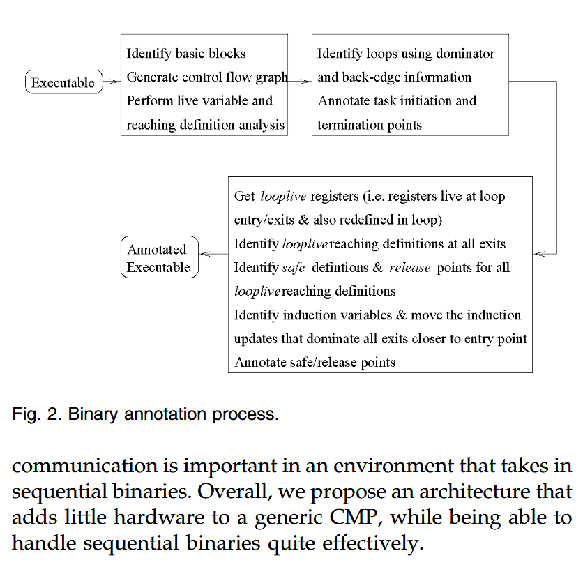
二进制代码注释过程的步骤如图 2 所示。我们使用的方法与 Multiscalar类似，只是我们对二进制代码而不是中间代码进行操作。
首先，我们要识别内循环迭代，并注释其启动点和终止点。
然后，我们需要识别这些线程之间的寄存器级依赖关系。这包括识别循环中的寄存器，即那些在循环进入/退出时有效的寄存器，这些寄存器也可能在循环中被重新定义。
然后，我们确定所有 looplive 寄存器在循环出口处的到达定义。根据这些循环活寄存器的到达定义，我们确定安全定义，即可能出现但其值在循环体中不会被覆盖的定义。同样，我们还能确定其余定义的释放点，这些定义的值可能会被另一个定义覆盖。
图 3 展示了循环寄存器 r3 的安全定义和释放点。确定这些点时，首先要对定义进行后向分析。然后，从循环入口点开始，对每一个循环到达的定义进行深度搜索。最后，确定归纳变量，并将其更新渗透到更靠近线程入口点的地方，前提是更新指令在循环的出口点占主导地位。这样可以减少后继迭代在使用归纳变量之前的等待时间。
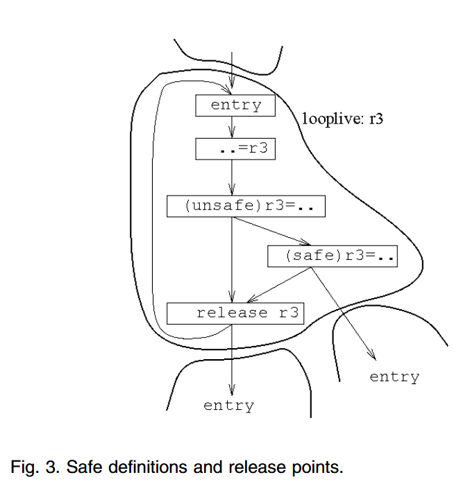
需要注意的是，与寄存器依赖性不同，内存依赖性不能轻易从二进制文件中识别出来。因此，我们将检测内存依赖性的全部责任交给了硬件。
最后，必须指出的是，在二进制文件中加入注释非常简单，只需对 ISA 稍作扩展即可。只需要额外的指令来识别线程的进入、退出和寄存器值释放点。我们假定硬件支持线程的启动和终止。
硬件支持
应用程序线程之间可以通过寄存器或内存进行通信。前者对于并行化顺序二进制文件非常重要。由于编译器能很好地分配寄存器，因此寄存器级的线程间依赖很常见。由于这些依赖关系可以在二进制代码中准确找到，我们可以在硬件中强制执行，从而避免不必要的线程压缩。为了实现灵活的线程间寄存器通信，该研究将传统的scoreboard扩展为同步scoreboard（SS）。
相比之下，在二进制层面很难识别内存依赖关系。因此，硬件完全负责识别和执行内存依赖关系。硬件应确保数据的投机和非投机版本不会混淆，并允许投机线程从适当的生产线程获取数据。它还必须识别投机线程过早访问内存位置时可能发生的违反依赖关系的情况。这将导致违规线程及其后续线程被压缩。所需的硬件可以是类似 ARB 的集中缓冲器。当然，也可以采用分散式设计，即使用每个处理器的主缓存来存储投机数据，同时增强缓存一致性协议以保持数据一致性。我们的硬件采用了后一种方法。与我们的工作同时进行的还有投机性版本缓存（SVC），它利用 snoopy 总线来保持不同处理器之间的数据一致性。我们的工作与 SVC 的不同之处在于，我们并不依赖于snooping；相反，我们使用了一种类似于基于目录的高速缓存一致性方案的方法，并借助了我们称之为Memory Disambiguation Table（MDT）的硬件。下面我们将依次介绍 SS 和 MDT。
为了让我们的硬件正常工作，每个线程都以位掩码（称为 ThreadMask）的形式将其状态保存在一个特殊寄存器中。线程的状态可以是表 1 所示四种值中的任何一种。在循环内部，非投机性线程执行当前迭代。投机后续线程 1、2 和 3 执行后续迭代，我们分别称之为第一、第二和第三次投机迭代。随着线程的完成，非投机性 ThreadMask 将从一个线程转移到其直接继承线程，以此类推。
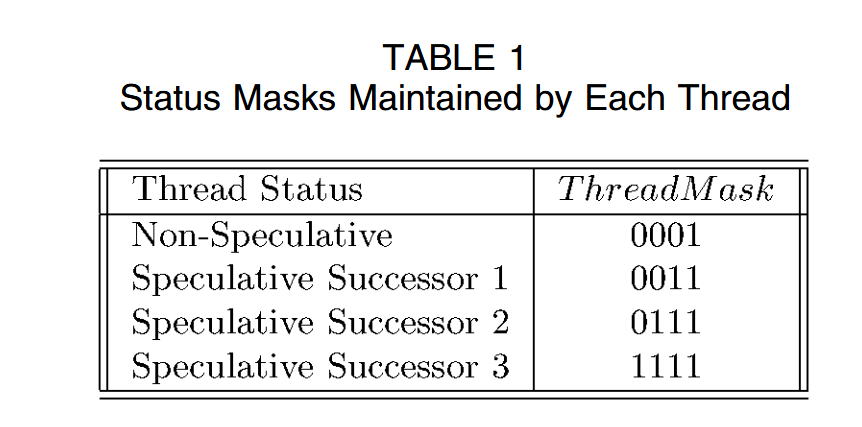
与同步记分牌的寄存器通信
同步记分板（SS）是一种完全分散的结构，由线程用于对寄存器值进行同步和通信。它是一个添加了额外位的记分板。每个处理器都有自己的副本。不同处理器中的 SS 通过一条广播总线连接，寄存器值就在这条总线上传输。这条总线我们称为 SS 总线，它的带宽有限，每个周期只有一个字。
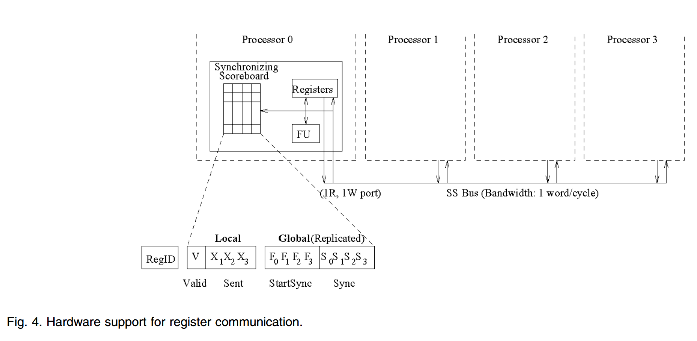
与传统记分牌一样，每个 SS 的每个寄存器都有一个条目。图 4 显示了一个条目的不同字段。这些字段分为本地字段和全局字段。为避免集中化，全局位是复制的，但在不同处理器的多个 SS 中很容易保持一致。全局字段包括同步（S）和启动同步（F）字段。每个字段都有一个位，分别作用于芯片上的每个处理器。
对于给定的寄存器，如果 位被设置，则表示在处理器 上运行的线程尚未将该寄存器提供给后续线程使用。当线程在处理器 上启动时，它会为它可能创建的所有looplive寄存器设置 位。当线程执行该寄存器的安全定义(safe definition)或释放指令时，寄存器的 位会被清零。此时，线程也会将寄存器的值写入总线，从而允许其他处理器在需要时更新寄存器的值。此时，后继线程就可以安全地使用寄存器了。
线程启动时， 位被设置为对应的 位的值。这是通过专用硬件完成的，当线程在处理器 上启动时，会初始化所有处理器 SS 中所有寄存器的 和 位。此后， 位在整个线程执行过程中保持不变。因此，它在所有 SS 中始终保持不变。
与传统记分板一样，每个处理器的每个寄存器都有一个额外的本地有效（）位。这个处理器专用位可以显示处理器是否拥有寄存器的有效副本。当进入代码的并行部分时，在前一个串行部分处于空闲状态的处理器会将其 位设置为零。当寄存器值由本地线程生成或由其他处理器发送时，比特位 的寄存器将被设置。
在给定的并行段中，处理器可以跨线程重复使用寄存器。当处理器启动一个新线程（即最新的投机线程）时，会按以下方式设置其 位： . 这样，三个前置线程中任何一个写入的寄存器都会失效，而其他寄存器仍然有效。
处理器之间的寄存器通信
线程之间的寄存器通信可以由生产者发起（producer- initiated），也可以由消费者发起（consumer-initiated）。生产者启动的方法已经概述。线程清除寄存器的 位时，会将寄存器写入 SS 总线。此时，每个后续线程都会检查其寄存器的 位，以及生产者（不包括）和自身（包括）之间线程的寄存器 位。如果所有这些位都为零，则后续线程加载寄存器，并将寄存器对应的 位设为 1。与此同时，所有处理器都会清除其 SS 中与生产者线程相对应的 位。但 位保持不变。
当生产者使用（原文为generate）寄存器时，消费者线程可能并未运行。我们可以使用缓冲通信机制，而不是简单的广播总线，来存储这些值。缓冲区可能会在最后一个投机线程之后保存所有活动寄存器，直到在后续线程上启动新线程。此外，这还需要进一步的硬件支持，即在每个处理器中设置重复的寄存器集，以便从压缩中恢复。或者，也可以使用全局寄存器集来存储这些值，但代价是需要维护一个集中式结构。
在我们的方案中，我们添加了最少的硬件来支持消费者启动的方法，即当消费者最终运行并需要寄存器时，通信才会发生。为了支持这种方式，SS 具有允许消费者线程识别相应生产者并获取寄存器值的逻辑。该逻辑工作原理如下。消费者线程首先检查寄存器的 位。如果 位被设置，则寄存器在本地可用。否则，检查前一个线程的 位。如果它被置位，则前一个线程是生产者。如果前置线程的 位被置位，则表示寄存器尚未生成，消费者阻塞。否则，消费者将从前置线程获取寄存器值。但是，如果紧随消费者之前的线程的 位等于零，则该线程不可能是生产者。在这种情况下，将在下一个前线程上重复位检查。这个过程会一直重复，直到到达非指定线程为止。对这些位的访问始终使用表 1 中的 T hreadMask 进行Mask。
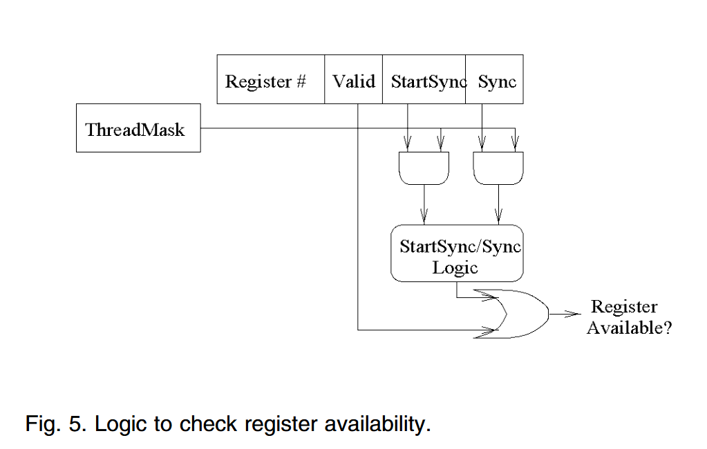
总的来说，确定寄存器是否可用的完整逻辑如图 5 所示。处理器中的每个寄存器都增加了这一额外逻辑。如果寄存器可用，读取线程会从 位清零、 位置位的最接近的前置寄存器中获取值。如果所有位都清零，则由非累计线程提供数值。消费线程在 SS 总线上发出请求，要求从相应线程读取寄存器中的值，从而启动值的传输。请求和回复信息各需要一到三个周期，这取决于生产者到消费者的距离，以及 SS 总线的争用情况。尽管延迟会导致 SS 条目（特别是 位）在短时间内与处理器不一致，但对整个机制没有任何影响。请注意，SS 主要用于后继者检查前继者是否产生了值。值延迟到达消费者只是延迟了消费者中相应位的清零。一旦消费者获得值，一致性就会恢复。
最后副本问题
当最后一个投机线程更新寄存器时，它没有后继线程可以向其发送值。因此，任何未来的消费线程都必须明确地向它请求值。另外，注意，当一个新线程启动时，它会使前置线程可能产生的任何本地寄存器失效。在这种情况下，芯片上给定寄存器的所有副本都可能失效。我们将这种情况称为最后副本问题。
最后复制问题如图 6 所示。在示例中，寄存器 r3 在所有线程中都是实时的，每个线程在写入寄存器之前都会先读取寄存器的值。因此，任何线程在启动时都会使其本地的 r3 副本失效。在图 6a 中，最后一个投机线程（线程 3）更新了 r3，没有其他线程消耗它。一段时间后，线程 0、1 和 2 已完成，线程 4、5 和 6 已代替它们启动，线程 3 已获得非投机状态，即将结束（图 6b）。如果我们现在在最右边的处理器上生成线程 7，就会面临最后一个复制问题：r3 将丢失。这是因为线程 4 还没有读取 r3，而线程 7 在生成后会清除 r3 的有效位。
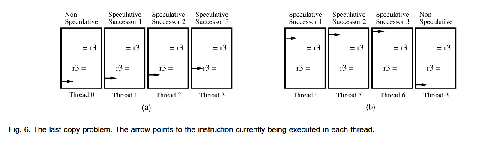
如果我们使用一种通信机制，将实时输出值缓冲到新线程中，或者使用一种集中式全局寄存器集来维护实时输出值，那么就不会出现最后一次拷贝的问题。例如，Multiscalar 处理器采用了第一种方法。它使用环形结构来转发寄存器值。因此，所有值都在环中从一个线程移动到另一个线程。它们在最后一个投机线程之后被缓冲，直到可以进一步转发。一旦非投机性线程结束，新线程启动，就可以继续转发。由于这是一种完全由生产者驱动的方法，寄存器会被备份，以防消费者线程被压缩。因此，每个处理器都会保留寄存器文件的两个副本：一个用来保留过去的值，另一个用来存储现在的值。前代处理器的转发副本保存在过去的寄存器组中，而线程创建的新副本保存在现在的寄存器组中。此外，为了还原状态，每个处理器最多可保留六个不同的寄存器掩码
Trace 处理器通过保留所有处理器都能看到的集中式全局寄存器集，避免了最后拷贝问题。这是每个处理器的本地寄存器集之外的另一个寄存器集。实时输出的寄存器值被发送到全局寄存器，任何处理器都可以从全局寄存器中读取这些值。因此，在上述两种方法中，架构都为投机提供了重要支持。在运行非法并行程序时，所有这些资源都不会被利用。
我们的 SS 设计可以通过简单的硬件支持来克服最后拷贝问题。我们的想法是，让每个线程记住它向其他三个线程中的哪个线程发送了寄存器。因此，每个处理器的每个寄存器都有 3 个额外的本地位，称为发送 (X) 位。如果相应的线程过去在生产者或消费者发起的事务中转发过寄存器，这些位就会被设置。这些位的用途如下： 在非执行线程结束前，我们会检查发送位，以确保不会丢失寄存器的最后副本。对于任何此类最后副本，线程只需将寄存器写入 SS 总线，以便投机线程可以读取。
非执行线程用于识别最后副本的逻辑如下： 假设处理器 0 执行检查。如果 X1(F1+X2(F2+X3)) 值为 FALSE，则需要在 SS 总线上写入它产生的每个循环活寄存器（ 位被设置的寄存器）。这样做的目的是检查该活动（live）值是否已经传递到终止该值的线程。如果 被设置，那么该线程就会杀死寄存器。与寄存器可用性的情况一样，该逻辑会针对每个寄存器进行复制。在线程结束时，每个寄存器都会并行检查其是否为最后一份副本（last-copy status）。最后，当处理器上启动一个新线程时，其余处理器会清除相应的 X 位，从而表明该值尚未发送到新的线程。
同步记分牌的复杂性
在结束对 SS 机制的讨论之前，我们将研究实现 SS 机制所需的面积及其对处理器周期时间的潜在影响。
更重要的是，每个处理器的寄存器文件需要额外的空间。每个寄存器存储 V、X、F 和 S 位的位数为 3n，其中 n 为芯片上处理器的数量（图 4）。对于具有 64 位寄存器的 4 处理器 CMP，存储开销约为 12%。总体而言，与在每个处理器中复制寄存器集或使用集中式全局寄存器文件相比，我们认为这些硬件要求并不高。
至于对周期时间的影响，在必须考虑所有位的最坏情况下，SS 逻辑产生的延迟会随着处理器支持的线程数迅速增加。然而，通过使用二叉树方法，只需使用 数量级的级门电路（ 为 CMP 中的处理器数量）即可实现该逻辑。因此，考虑到芯片上可放置的处理器数量较少，且这种电路是浅层电路，不太可能影响周期时间。
此外，SS 总线是通过分段缓冲器实现的。通过这种流水线方式，我们可以消除对处理器周期时间的任何影响。不过，从一个处理器向另一个处理器发送信息可能需要几个周期：一到三个周期不等。
最后，我们注意到，我们为寄存器文件增加的复杂度并不高：我们只为每个寄存器文件增加了一个读取端口和一个写入端口。因此，在一个给定的周期内，每个处理器只能向总线写入或从总线读取一个值。不过，这一限制对性能影响不大。
处理内存级依赖性的硬件支持
主要内容是：识别内存级依赖性并可能从内存级依赖性中恢复所需的硬件支持
当应用程序以投机模式运行时，有可能产生错误的数据。因此，我们需要将投机数据与非投机数据分开。只有非投机线程才允许修改程序的顺序状态。由于顺序状态在程序执行过程中始终可用，这一限制大大简化了错误投机的恢复和异常处理。因此，在我们的方案中，CMP 中的每个处理器都有一个特殊支持的私有 L1 高速缓存。在投机执行期间，投机线程以受限的回写模式使用 L1 缓存： L1 可以回写，但不能替换脏行。当脏行即将被替换时，线程会停滞。
与投机线程不同，非投机线程可以更新共享 L2 缓存，因为其存储操作是安全的。因此，当投机线程获得非投机状态时，脏行可以从 L1 缓存中移出。此外，L1 缓存开始以直写模式工作（即每次写入缓存的同时，也立即将数据写入主存储器）。迭代完成后，在提交之前，缓存中剩余的任何脏行都会被刷新到内存中。这样，我们就能以干净的缓存启动新线程。需要注意的是，如果 L1 高速缓存保留了额外的位，用于标记在处理器中启动新的投机线程后仍留在高速缓存中的脏字，那么既不需要写透高速缓存，也不需要刷新高速缓存。不过，为了保持系统的简洁性，我们的方案不支持这种位。
在所述缓存环境下，我们借助内存消歧表（MDT）来识别内存依赖性违规行为。MDT 有点类似于传统共享内存多处理器中的目录。根据其大小，MDT 可以集成到二级缓存中，也可以位于芯片上。
为了实现投机执行，专用 L1 高速缓存中缓存的每个字都增加了表 3 所示的位。无效位（I）和脏位（D）的作用与传统缓存中的相同。
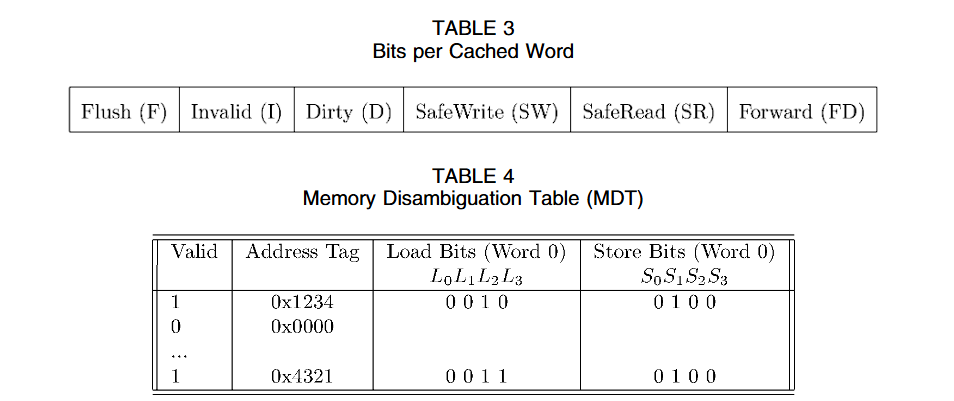
安全写入（SW）和安全读取（SR）位由投机线程使用。 理论上，每个处理器在执行加载或存储操作时，都必须通知 MDT，而 MDT 会跟踪内存依赖性违规情况。SW 和 SR 位允许处理器在不通知 MDT 的情况下执行加载和存储操作。
具体来说，如果 SW 位被设置，则允许线程在不通知 MDT 的情况下对字执行写操作。线程首次执行存储时，会设置 D、SW 和 SR 位。它还会向 MDT 发送一条信息。如果 SW 位被置位，则可以在不向 MDT 发送任何信息的情况下对字进行后续存储。当处理器启动新线程时，SW 位清零。当后继线程加载相同字时，MDT 将请求转发给处理器并设置 SW 位，SW 位也会被清零。清除 SW 位的原因是，如果线程再次存储到相同的字，将向 MDT 发送一条信息。这样，MDT 就能标记投机线程执行了过早加载。
如果 SR 位被设置，则允许线程在不通知 MDT 的情况下从字执行加载操作。当线程首次从字加载或存储到字时，该位被置位。当处理器启动新线程时，该位清零。
刷新（F）位用于在处理器启动新线程前，从 L1 缓存中清空过时的字。当一个线程存储到一个字时，其所有后续线程缓存中具有相同地址的字都必须失效。至于后继线程，则需要保留相关信息，以表明在它们完成存储后，字将在其缓存中失效。F 位用于识别需要在不同线程启动时失效的缓存字，同时允许重复使用剩余的字。因此，当处理器启动线程时，I 位会自动设置为： 。操作完成后，F 位清零。
最后，转发（FD）位用于识别来自其他处理器的转发数据。以缓存行的粒度维护这些位可能会导致错误的依赖性检测，进而导致不必要的线程压缩。因此，我们在字级别维护信息。
Memory Disambiguation Table (MDT)
MDT 执行消歧机制。它以每条内存行为单位保存条目，并与 L1 缓存一样，以每个字为单位保存信息。对于每个字，它为每个处理器保存一个加载（L）位和一个存储（S）位。当处理器启动新线程时，所有 L 位和 S 位都会被清零。线程执行时，MDT 就像一个目录，记录哪些处理器共享哪些字。表 4 显示了一个 4 处理器 CMP 的 MDT。表中只显示了第 0 行的状态。
MDT 位于每个处理器的 L1 高速缓存和共享 L2 高速缓存之间，以 multibanked 方式分布。它接收所有未被 L1 缓存拦截的请求。在随后的评估中，我们发现 MDT 的规模可以很小。因此，它可以配置在芯片上。MDT 也可以集成到 L2 缓存中。
我们将首先解释 MDT 在接收到来自处理器的加载或存储信息时是如何工作的。
加载操作。来自非执行线程的加载无需执行任何特殊操作，可以正常进入 L2 缓存。同样，如果来自投机线程的加载在 L1 缓存中找到了 SR = 1 的字，则不会访问 MDT。但是，当投机线程发出的加载指令在 L1 缓存中未命中或命中了 SR = 0 的字时，我们必须访问 MDT 以找到与加载指令地址相匹配的条目。如果没有找到条目，就会创建一个新条目，并设置与请求的线程和字对应的 L 位。但是，如果已经存在一个条目，则可能是之前的线程更新了该字。因此，需要检查 S 位，以确定更新过字的前一个线程的 ID。线程掩码（ThreadMask）可用于屏蔽其中的某些位，具体取决于发出加载的线程的投机状态。例如，如果线程 2 是第二个投机后续线程，并且它发出了加载，那么只检查 位。
存储操作。与加载不同，如果后继投机线程过早加载字，存储操作会导致线程被压缩。因此，在存储操作中测试的是后继线程，而不是前继线程。由于我们使用的是直写式 L1 高速缓存，因此非执行线程的所有存储操作都会访问 MDT。对于投机线程，在 L1 缓存中未命中或命中 SW = 0 字的存储也会访问 MDT。访问 MDT 时，我们会检查是否有与正在更新的地址相对应的条目。如果未找到条目，投机线程会创建一个新条目，并设置相应的 S 位。
但是，如果存在一个条目，则要检查该线程的一个成功者是否执行了过早加载。必须同时检查 L 和 S 位。我们再次使用 ThreadMask 位来选择正确的位。不过，我们现在使用这些位的补码作为掩码。这是因为通过补码可以得到后续线程。
该逻辑判断是否有后继线程执行了不安全加载，而没有任何介入线程执行存储。显然，如果中间线程执行了存储操作，则存在必须忽略的错误（输出）依赖关系。
但是，如果检查存储逻辑的评估结果为真，那么 L 位被设置的最接近的后续线程（读取线程）及其所有后续线程都会被压缩并重新启动。需要注意的是，我们也会延缓读取线程之后的所有线程，因为读取线程有可能将错误数据转发给了自己的后续线程。我们还会从所有被压缩线程的缓存中取消更新的字。
最后，存储过程中还会执行两个操作。MDT 会发送一条信息，为前置 L1 缓存中的字设置 F 位。F 位意味着字仅在当前线程执行过程中有效。此外，还将向所有后继者发送一条失效消息，直至但不包括 S 位被设置的那个后继者。这是防止所有后继线程从自己的 L1 缓存中读取过期数据所必需的。与传统的 SMP 相比，写入会导致所有处理器缓存中的行失效。
表溢出。MDT 有可能出现条目耗尽的情况。需要插入新条目的线程必须是投机线程。如果没有可用条目，线程就会停滞，直到出现可用条目。非投机线程不会受到任何影响，可以在 MDT 满的情况下继续执行加载和存储操作。
当 MDT 条目的所有 L 位和 S 位均为零时，该 MDT 条目就可用了。这些位在以下情况下会被清零： 首先，当线程启动时，它的所有 L 和 S 位都会被清零。当线程变成非指定线程时，它的所有 L 位都会被清零。我们不能清空线程的 S 位，因为这些位表示线程的 L1 缓存中包含字的非累积版本的唯一副本。非推算型线程的 S 位会逐步清零：当脏字从缓存中移出时、当脏字被写入内存时、当正好在提交点之前从缓存中刷新脏字时。
实际上，缺少空闲 MDT 条目并不是一个重要问题： MDT 不需要很大，应用程序就能提供良好的性能。
当新线程启动或线程被压缩时会发生什么？
线程启动时，所有 F 位被设置的字都会失效。F、SW 和 SR 位被清零。至于 MDT，新线程的相应 L 和 S 位也会被清零。线程被压缩时不会采取任何特殊措施，因为最终会在这些处理器上启动新线程，并执行上述所有操作。
当一个线程被压缩时，我们需要从其处理器的 L1 缓存中使一些额外的字失效：那些脏的字和那些从被压缩的前一个线程转发的字。为了识别后者的超集，我们向每个缓存字添加一个前向（FD）位。当 MDT 通知执行加载的处理器数据正在从另一个处理器的 L1 高速缓存转发时，该位被设置。因此，当线程被压缩时，我们需要使用 从其 L1 缓存中使设置了 D 或 FD 位的字无效。
总体而言，我们的方案在 L1 缓存中缓存的每个字（包括 D 位和 I 位）的开销为 6 位。一致性协议与传统的基于目录的方案类似。与传统目录一样，MDT 也可以是分布式的。例如，它可以根据内存行的物理地址分布在多个存储库中。最后，必须提到的是，MDT 是一个独立的依赖性跟踪设备，可以实现进一步的改进。
与其他方案的比较
与我们的提议同时或更早提出的其他方案也允许在内存级进行投机。地址解析缓冲器（ARB）就是这样一种方案。ARB 是一个专用模块，位于多核处理器的多个处理单元和共享 L1 高速缓存之间。它为投机数据提供存储空间，还能识别依赖性违规。在这种方案中，L1 高速缓存存储程序的顺序状态。所有处理单元的所有内存访问在到达 L1 高速缓存之前都要通过 ARB。这是一种非常集中的方案，会因 L1 缓存访问的延迟而影响性能。
除我们的方案外，还有其他三种方案允许 CMP 中的每个处理器拥有私有 L1 缓存或缓冲区。Oplinger 等人提出了一种方案，使用额外的缓冲区而不是 L1 缓存来保存投机数据。虽然这简化了协议，但小缓冲区可能会满，导致投机线程停滞。Steffan 和 Mowry概述了一种允许 L1 缓存缓冲投机状态的方案。不过，他们的描述并未提及处理数据依赖性的精确缓存一致性方案。目前与我们的工作共同开发的投机版本缓存（SVC）是处理依赖性的详细架构方式。与使用类似目录方法的 MDT 方案不同，SVC 方案使用窥探缓存来检测内存依赖性违规行为。最后，多值缓存方案维护同一内存位置的多个状态，并使用广播机制在线程之间传递信息。
对投机的总体支持
在本节中，我们将总结在 CMP 上以投机方式运行应用程序所需的整体支持。首先，我们需要预测下一个线程的起始地址。由于在当前工作中，我们只将线程限制在循环迭代中，因此下一个线程的起点始终与当前线程相同，即循环迭代的起点。因此，预测下一个线程的起始地址是微不足道的。
由于我们系统中使用的任务粒度较小，因此我们需要用于线程启动和终止的硬件。线程启动硬件包括支持初始化 SS、L1 缓存和 MDT 条目中的额外位。线程终止硬件包括支持对这些位和表项执行终止操作。此外，L1 缓存需要根据线程的状态作为回写或直写工作，对于投机线程，还需要在脏行位移时使线程停滞。
寄存器级通信需要一条广播总线，每个寄存器文件还需要一个额外的读取端口和一个额外的写入端口。此外，记分板需要为每个寄存器增加 3n 个额外位，其中 n 是芯片上处理器的数量。最后，我们还需要为每个寄存器复制一些额外的逻辑，以执行各种检查，如前几节所述。
处理内存依赖性需要 MDT 以及检查内存依赖性违规的相关逻辑，且MDT 可以很小。总之，增强 CMP 以投机方式执行应用程序只需要少量硬件。